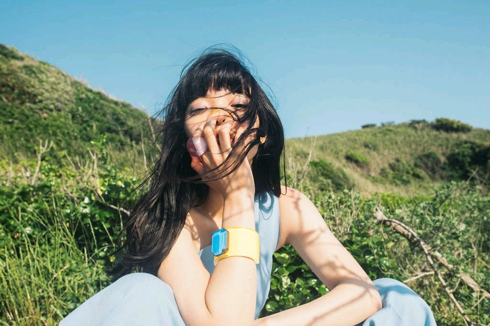
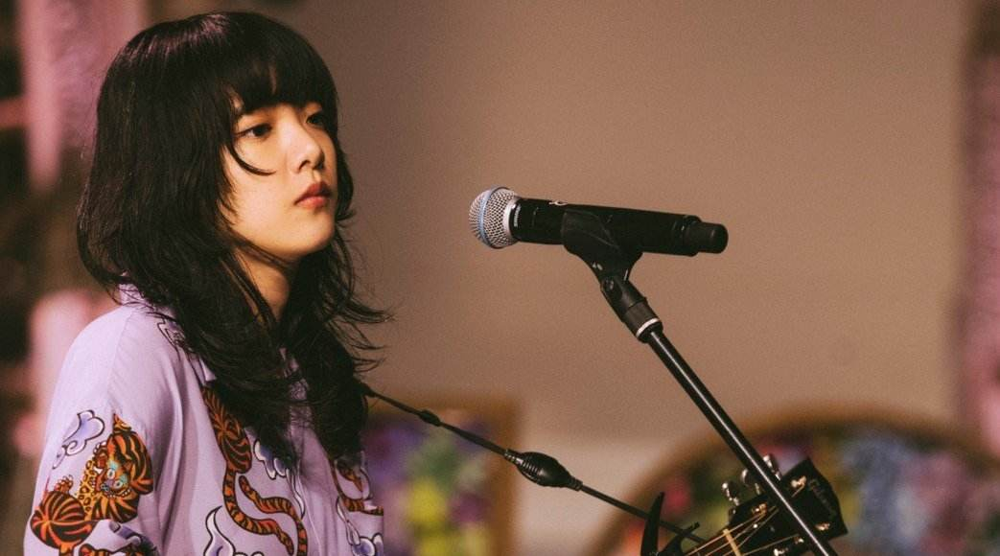

Aimyon(あいみょん)
个人简介 所获奖项 重要事件 主要作品 人物写真 喜欢的音乐人
个人简介
Aimyon ，あいみょん。1995年3月6日出生于兵库县西宫市。Aimyon是日本歌手和词曲作者，所属经纪公司为ENS Entertainment。艺名“爱缪”是由高中好友取的，好友也是歌曲《○○ちゃん》的原型。
所获奖项
FM Q LEAGUE AWARD 2017：年间大赏 - “君はロックを聴かない”。
FM5局共同企画“NIHON SAFETY MUSIC FOR THE NEXT”：NEXT BREAK ARTIST。
第61回辉く！日本レコード大赏 : 优秀アルバム赏 - “瞬间的シックスセンス”。
MTV Video Music Awards Japan : 最优秀アーティストビデオ赏“今夜このまま”（2019年）。
SPACE SHOWER MUSIC AWARDS 2020 : BEST FEMALE ARTIST。
MTV Video Music Awards Japan : 最优秀邦楽女性アーティストビデオ赏 / BEST VIDEO OF THE YEAR“裸の心”（2020年）。
重要事件
中学：受到想成为歌手的祖母以及从事音乐相关工作的父亲的影响，开始作词作曲。
初二：开始作词，同时期父亲给了她电吉他，但是因为不适应一个月就放弃了。
初三：外教回国前把原声吉他送给了她，于是再次开始弹唱（出道后，在社交网站和外教也再次取得了联系）。最开始挑战简单的曲子，弹唱了尾崎丰和Spitz等的歌曲。
高一：开始作曲，因为老家的朋友在Youtube拍音乐系的节目，于是演奏过大概2次。朋友上传了爱缪的影片。
高中毕业后：经纪公司看到此影片，在Twitter上和她取得联系。正式进经纪公司前被要求写50首歌，于是爱缪在独立出道的时点交出了涵盖亲子间的羁绊、性的真理以及生死观和恋爱模样等约130首的歌曲音源。
2014年：经纪公司把她介绍给华纳音乐旗下的unBORDE的代表铃木龙马，此后开始作词作曲以及演唱会的训练。因为经纪公司的战略是“比起着急而不慎重地推出艺人出道，更想培养其能够成为长期受到喜爱的艺术家。”所以先独立出道测试市场反应。
2015年2月4日：凭《Time goes by》作词家出道。此歌为杰尼斯WEST第三张单曲《ズンドコ パラダイス》的B面曲。
2015年3月4日：发行了Tower Record音像店限定贩卖的独立出道单曲《解剖你纯爱歌 ～死吧～》，因过激的歌词成为话题，即使在电视电台不能播放，仍取得了ORICON独立周榜的第10名。
2015年5月20日：发行了第一张全国流通盘的迷你专辑《tamago》。
2016年2月16日、在SPACE SHOWER公司举办的“近未来将火爆的歌手”企画活动‘SPACE SHOWER NEW FORCE’中，爱缪被选为10组歌手中的其中一个。
2016年4月10日，在“unBORDE”设立5周年纪念活动“Coca-Cola presents unBORDE 5th Anniversary Fes 2016”上，爱缪第一次在8000个观众面前演唱。
2016年11月30日、凭借单曲《她曾活过啊》主流出道。歌曲也被TV东京的电视剧《只想住在吉祥寺吗》起用为主题曲。
2017年2月4日公开的《恋爱奇谭集》的主题曲为爱缪的《漂白》，是她的第一首电影主题曲。
2017年8月2日发行了第3张单曲《你不听摇滚》，获得了日本全国42电台8月度的播放量冠军，时隔4年3个月更新了播放量最高记录。
2017年8月16日，为DISH//乐队提供第10张单曲专辑的B面曲《猫》，2020年此歌THE FIRST TAKE版大火，借此DISH//乐队的职业生涯也上了一个很大的台阶。
2017年9月13日，发行了第一张专辑《青春的悸动》，销售量连续2年登上ORICON榜单。
主要作品
序号
年份
单曲名
1st
2016年11月30日
曾经活着啊
2nd
2017年5月3日
传达爱
3rd
2017年8月2日
你不听摇滚
4th
2018年4月25日
假如在满月之夜
5th
2018年8月8日
金盏花
6th
2018年11月14日
今夜就这样
7th
2019年4月17日
春日
8th
2019年7月24日
仲夏夜的味道
9th
2019年10月2日
知道天空有多蓝的人啊
10th
2020年6月17日
裸之心
11th
2021年5月26日
爱を知るまでは/桜が降る夜は
人物写真


喜欢的音乐人
草野正宗：小学时期从爸爸房间里摸出的第一张CD是spitz的“空も飞べるはず”，也是爱缪走上音乐道路的重要契机。spitz可以说是对她的音乐影响最大的乐队，到现在为止跟草野对谈过两次，草野在fc里赞扬过金盏花，也在演唱会哼过，当天爱缪就在台下。
平井坚：坚桑在听到爱缪喜欢他以后，主动写信认识，邀请她当自己演唱会的嘉宾合唱爱缪的歌曲，去年以爱缪的形象写了合作曲“怪物さん”，坚桑还透露不止这一首，其实为她写了四五首歌。
小泽健二：去年实现了在东京塔的对谈，小泽去了爱缪1995武道馆演唱会，meat·meet演唱会，并且说新曲“彗星”这首歌是写的爱缪，歌词里的1995就是受到爱缪武道馆的启发。对谈中大赞爱缪很酷，爱缪成为了爱缪，不需要成为任何人。
松任谷由实：毒舌了整个日音圈的女士，不仅没有毒舌爱缪还称赞她的音乐。红白的时候她表示最想见的是爱缪，主动叫爱缪到她的休息室拍合照。认识以后私交一直很好，经常互相送礼物。
小山田壮平：爱缪写的“梦追いベンガル”就是致敬andymori“ベンガルトラとウィスキー”，小山田知道后在电台中回应，说自己在涉谷逛街的时候会听爱缪的梦追い，这首歌非常帅气。
滨田省吾：前段时间还在电台里说想见爱缪，爱缪激动到不行，总有一天会见面的。